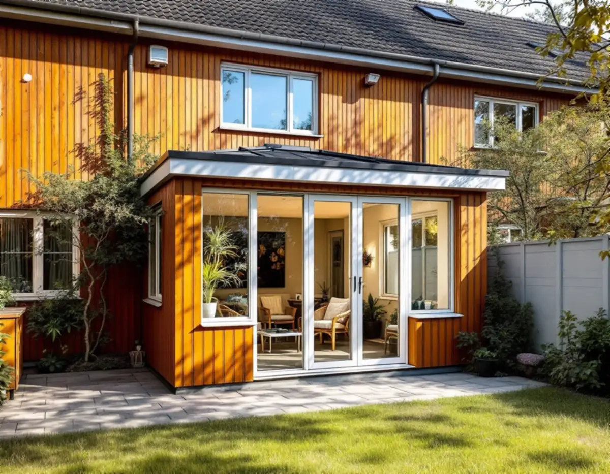
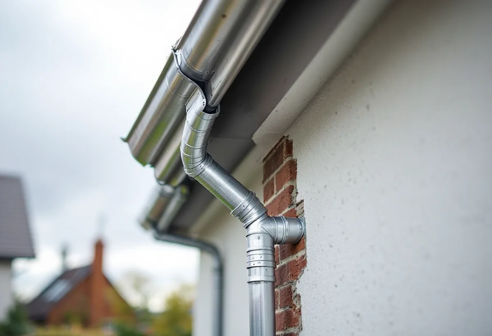
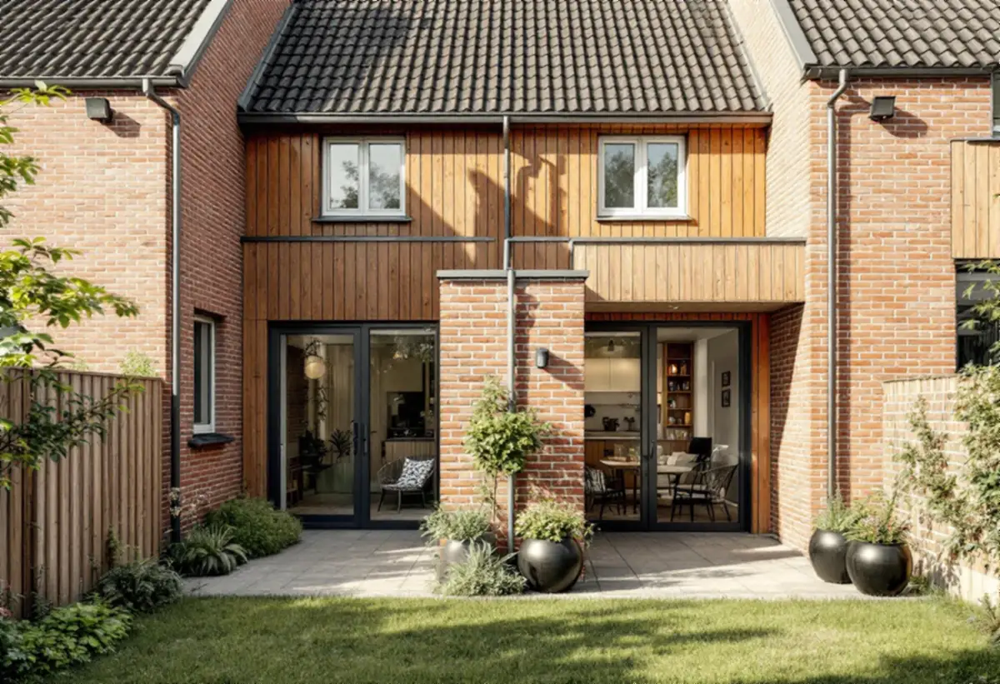

Platsbesök
Gratis besök där vi mäter taket och tittar på längan.
Radhusen i Kista och Akalla har ofta platta eller svagt lutande tak och delar väggar med grannarna. Det påverkar både hur hög en tillbyggnad får bli och vad som måste anmälas. Geal Entreprenad AB bygger uterum, tillbyggnader och skärmtak och reder ut reglerna innan arbetet börjar.

Stadens vägledning Varsam utveckling av småhus- och villaområden beskriver småhusen i de storskaliga stadsdelarna, däribland Akalla och Husby, som radhus och kedjehus där taken ofta var platta eller svagt lutande pulpettak. Kista byggdes enligt Stadsmuseet ut under åren 1975–1980.
Stockholms stad skriver att en lovfri tillbyggnad inte får vara högre än den befintliga byggnadens taknock. På ett hus med lågt tak blir det en verklig begränsning: en tillbyggnad med eget sadeltak kan snabbt nå över nocken. Vi ritar därför ofta ett låglutande tak som ansluter under det befintliga.

I en radhuslänga delar husen väggar, och brandskyddet mellan bostäderna är byggt in i längan. Staden skriver att en tillbyggnad kräver anmälan och startbesked om den påverkar byggnadens bärande konstruktion eller brandskydd, även när bygglov inte behövs.
En tillbyggnad som går ända fram till grannens gräns eller ansluter mot den gemensamma väggen behöver därför ritas så att brandskyddet hålls. Den ska också stå 4,5 meter från gränsen, eller så behövs ett skriftligt medgivande från grannen med situationsplan och underskrift. Vi tar fram ritningen som grannen skriver under.
Boverket skriver att låglutande tak belastas mer av nederbördsvatten och att en otillräcklig avvattning kan ge fuktskador. Utvändiga rännor och stuprör kan frysa, och stuprör som går till mark kan skadas av till exempel fordon. Om en brunn sätter igen ska vattnet kunna rinna vidare till en annan brunn eller ut genom ett bräddavlopp.
När en tillbyggnad ansluter mot ett befintligt låglutande tak bestämmer vi tidigt var vattnet ska ta vägen, så att det inte samlas i hörnet mellan de två taken. Det är också där plåtslagaren och takläggaren behöver mötas i arbetet.
Vägledningen beskriver en blandning av tegel, trä och skivor på fasaderna men en mycket stor enhetlighet inom varje husgrupp. En tillbyggnad som tar upp längans material och kulör smälter in. Om fastigheten omfattas av skyddsbestämmelser eller ligger i ett särskilt värdefullt område krävs bygglov, och det visar Stadsmuseets klassificeringskarta.
Stadens områdesfakta räknar 404 av småhusen i Kista som bostadsrätter. I en bostadsrätt krävs enligt bostadsrättslagen styrelsens tillstånd för bland annat ingrepp i bärande konstruktion och andra väsentliga förändringar, och marken ägs av föreningen. Äger du huset själv, som gäller 482 av småhusen i Kista, är det du som är byggherre.
Staden skriver att ett medgivande ska vara skriftligt och innehålla fastighetsbeteckning, vilken åtgärd det gäller, en situationsplan med åtgärden och avståndet till gränsen inritade och underskrifter från berörda grannar. Får du inte medgivandet behöver du söka bygglov i stället.

Gratis besök där vi mäter taket och tittar på längan.
Taknock, 30 kvadratmeter och tidigare tillbyggnader.
Tak, avvattning och anslutning mot grannväggen.
Startbesked när brandskydd eller stomme berörs.
Grund, stomme, tak och plåt.
Kontroller enligt kontrollplanen.
Skatteverket räknar tillbyggnad av ett småhus som rotarbete när en sida sitter ihop med husets yttervägg till minst 75 procent eller när en dörr förbinder delarna. Huset ska vara äldre än fem år. Avdraget gäller arbetskostnaden, högst 30 procent och högst 50 000 kronor per person och år.
I en bostadsrätt gäller avdraget bara arbete inne i bostaden som du ansvarar för enligt stadgarna. Där avdraget gäller drar Geal det direkt på fakturan.
Storlek, grund, takets lutning och anslutning, avvattningen, brandskyddet mot grannen och om en vägg öppnas mot huset. Efter ett gratis platsbesök får du ett skriftligt kostnadsförslag.
Mer boyta i samma hus.
Tillbyggnad →Takbyte, takbesiktning och plåtarbeten.
Takläggare i Kista →Låga tak, tätskikt och takbrunnar från 1970-talet.
Takrenovering i Kista →Gårdshus vid radhus och villor.
Attefallshus i Kista →Radhusen, föreningen och ventilationen.
Badrumsrenovering i Kista →Uterum, altan och föreningens tillstånd.
Byggföretag i Kista →Radhus, atriumhus och husgruppen.
Fasadmålning i Kista →Panel, skivor och isolering på radhus.
Fasadrenovering i Kista →Radhus och villor från 1970-talet.
Fönsterbyte i Kista →1970-talets radhusfönster.
Fönsterrenovering i Kista →Nya golv på betong i radhus och lägenheter.
Golvläggare i Kista →Golvslipning i bostadsrätt, hyresrätt och radhus.
Golvslipning i Kista →Småhus i förening och kök från 1970-talet.
Köksrenovering i Kista →1970-talets hus, asbest och ROT.
Målare i Kista →Rännor, stuprör och beslag.
Plåtslagare i Kista →Garderober, väggar och dörrar i lägenheten.
Snickare i Kista →Platta tak och pulpettak.
Takbyte i Kista →Lägenheter och radhus från 1970-talet.
Tapetsering i Kista →Renovera hela huset eller lägenheten.
Totalrenovering i Kista →